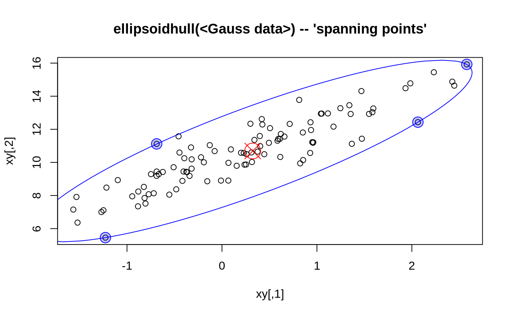

ellipsoidhull.RdCompute the “ellipsoid hull” or “spanning ellipsoid”, i.e. the ellipsoid of minimal volume (‘area’ in 2D) such that all given points lie just inside or on the boundary of the ellipsoid.
ellipsoidhull(x, tol=0.01, maxit=5000, ret.wt = FALSE, ret.sqdist = FALSE, ret.pr = FALSE) # S3 method for ellipsoid print(x, digits = max(1, getOption("digits") - 2), ...)
| x | the \(n\) \(p\)-dimensional points asnumeric \(n\times p\) matrix. |
|---|---|
| tol | convergence tolerance for Titterington's algorithm.
Setting this to much smaller values may drastically increase the number of
iterations needed, and you may want to increas |
| maxit | integer giving the maximal number of iteration steps for the algorithm. |
| ret.wt, ret.sqdist, ret.pr | logicals indicating if additional
information should be returned, |
| digits,... | the usual arguments to |
The “spanning ellipsoid” algorithm is said to stem from
Titterington(1976), in Pison et al (1999) who use it for
clusplot.default.
The problem can be seen as a special case of the “Min.Vol.”
ellipsoid of which a more more flexible and general implementation is
cov.mve in the MASS package.
an object of class "ellipsoid", basically a list
with several components, comprising at least
\(p\times p\) covariance matrix description the ellipsoid.
\(p\)-dimensional location of the ellipsoid center.
average squared radius. Further, \(d2 = t^2\), where
\(t\) is “the value of a t-statistic on the ellipse
boundary” (from ellipse in the
ellipse package), and hence, more usefully,
d2 = qchisq(alpha, df = p), where alpha is the
confidence level for p-variate normally distributed data with
location and covariance loc and cov to lie inside the
ellipsoid.
the vector of weights iff ret.wt was true.
the vector of squared distances iff ret.sqdist was true.
the vector of algorithm probabilities iff ret.pr was true.
number of iterations used.
just the input argument, see above.
the achieved tolerance which is the maximal squared radius minus \(p\).
error code as from the algorithm; 0 means ok.
logical indicating if the converged. This is defined as
it < maxit && ierr == 0.
Pison, G., Struyf, A. and Rousseeuw, P.J. (1999)
Displaying a Clustering with CLUSPLOT,
Computational Statistics and Data Analysis, 30, 381--392.
D.M. Titterington (1976) Algorithms for computing D-optimal design on finite design spaces. In Proc.\ of the 1976 Conf.\ on Information Science and Systems, 213--216; John Hopkins University.
predict.ellipsoid which is also the
predict method for ellipsoid objects.
volume.ellipsoid for an example of ‘manual’
ellipsoid object construction;
further ellipse from package ellipse
and ellipsePoints from package sfsmisc.
chull for the convex hull,
clusplot which makes use of this; cov.mve.
x <- rnorm(100) xy <- unname(cbind(x, rnorm(100) + 2*x + 10)) exy. <- ellipsoidhull(xy) exy. # >> calling print.ellipsoid()#> 'ellipsoid' in 2 dimensions: #> center = ( 0.32348 10.68964 ); squared ave.radius d^2 = 2 #> and shape matrix = #> [,1] [,2] #> [1,] 2.6693 5.4695 #> [2,] 5.4695 15.0512 #> hence, area = 20.126exy <- ellipsoidhull(xy, tol = 1e-7, ret.wt = TRUE, ret.sq = TRUE) str(exy) # had small 'tol', hence many iterations#> List of 12 #> $ loc : num [1:2] 0.321 10.688 #> $ cov : num [1:2, 1:2] 2.68 5.49 5.49 15.07 #> $ d2 : num 2 #> $ wt : num [1:100] 1.06e-35 3.48e-39 1.45e-67 5.77e-78 2.76e-257 ... #> $ sqdist: num [1:100] 1.2165 1.1663 0.7741 0.6689 0.0511 ... #> $ prob : NULL #> $ tol : num 1e-07 #> $ eps : num 9.6e-08 #> $ it : int 161 #> $ maxit : num 5000 #> $ ierr : int 0 #> $ conv : logi TRUE #> - attr(*, "class")= chr "ellipsoid"#> [1] 40 50 56 98## --> only about 4 to 6 "spanning ellipsoid" points round(exy$wt[ii],3); sum(exy$wt[ii]) # weights summing to 1#> [1] 0.226 0.311 0.305 0.158#> [1] 0.9999998